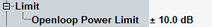

Limit
The UE has to calculate its output power for initial DPCCH at each carrier. Particular system information is received via the BCCH (DPCCH power offset) and from the received signal power level of the CPICH.
The requirements for the test are defined by 3GPP TS 34.121, in section 5.4.1A "Open Loop Power Control in the Uplink for DC-HSUPA".
The tolerance for the UE TX power of initial dual uplink carrier transmission at any carrier is:
- ±10 dB under normal conditions and
- ±13 dB under extreme conditions.
You can define a symmetrical tolerance value in the configuration dialog.
The DPCCH power offset parameter is controlled by the signaling application in the combined signal path.

Open loop power limit